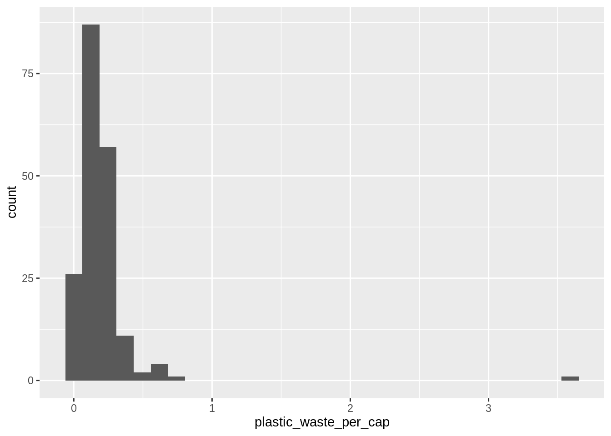

library(tidyverse)AE03-02 Exploring data on plstic waste
This exercise is adopted from ata Science in a Box.
Learning goals
- Visualising numerical and categorical data and interpreting visualisations
- Recreating visualizations
- Getting more practice using with R, RStudio, Git, and GitHub
Setup
Data
The dataset for this assignment can be found as a csv file in the data folder of your repository. You can read it in using the following.
plastic_waste <- read_csv("data/plastic-waste.csv")The variable descriptions are as follows:
code: 3 Letter country codeentity: Country namecontinent: Continent nameyear: Yeargdp_per_cap: GDP per capita constant 2011 international $, rateplastic_waste_per_cap: Amount of plastic waste per capita in kg/daymismanaged_plastic_waste_per_cap: Amount of mismanaged plastic waste per capita in kg/daymismanaged_plastic_waste: Tonnes of mismanaged plastic wastecoastal_pop: Number of individuals living on/near coasttotal_pop: Total population according to Gapminder
Exercises 1.
Glimpse at the data
# ______ %>% _________()Exercises 2.
Compute summary statistics using skimr::skim() and report::report(). Load the package first or even install it if needed.
# library(______)
# _______()Exercises 3.
Let’s start by taking a look at the distribution of plastic waste per capita in 2010.
ggplot(data = plastic_waste, aes(x = plastic_waste_per_cap)) +
geom_histogram()`stat_bin()` using `bins = 30`. Pick better value with `binwidth`.Warning: Removed 51 rows containing non-finite values (stat_bin).
One country stands out as an unusual observation at the top of the distribution.
One way of identifying this country is to filter the data for countries where plastic waste per capita is greater than 3.5 kg/person.
plastic_waste %>%
filter(plastic_waste_per_cap > 3.5)# A tibble: 1 × 10
code entity continent year gdp_per_cap plastic_waste_p… mismanaged_plas…
<chr> <chr> <chr> <dbl> <dbl> <dbl> <dbl>
1 TTO Trinidad … North Am… 2010 31261. 3.6 0.19
# … with 3 more variables: mismanaged_plastic_waste <dbl>, coastal_pop <dbl>,
# total_pop <dbl>Did you expect this result? You might consider doing some research on Trinidad and Tobago to see why plastic waste per capita is so high there, or whether this is a data error.
- Plot, using histograms, the distribution of plastic waste per capita faceted by continent. What can you say about how the continents compare to each other in terms of their plastic waste per capita?
Another way of visualizing numerical data is using density plots.
Duilt a density plot below.
#And compare distributions across continents by colouring density curves by continent.
#Transform the variable of plastic waste per capita to observe more informative density plot.
#Exercises 4.
Built a box plot of plastic sate by continent
Exercises 5.
Build a scatter plot of plastic waste per capital and GDP per capital.